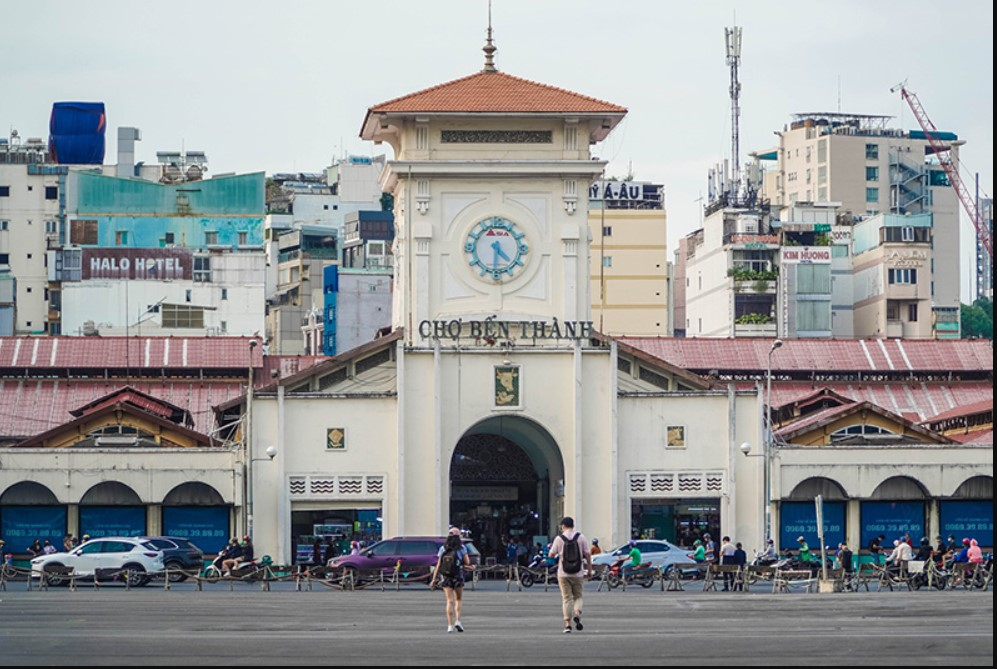
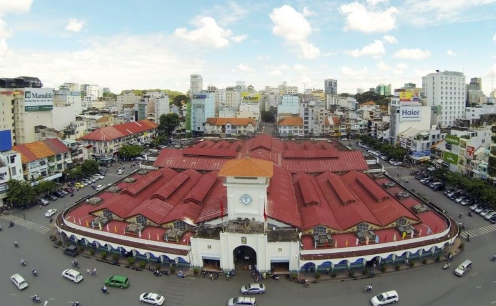
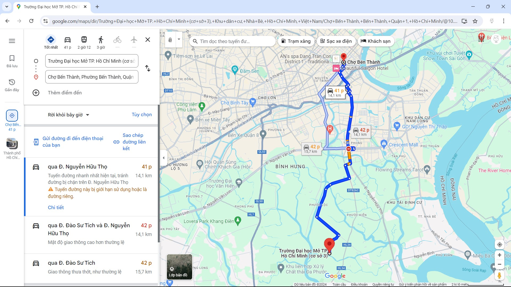
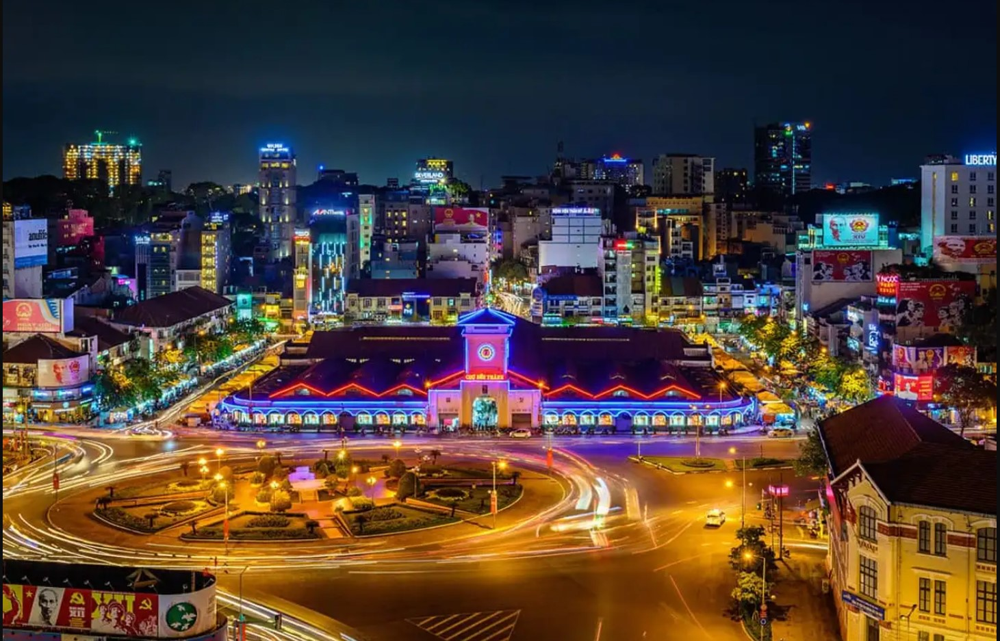

Chợ Bến Thành
Mục lục các địa điểm
Giới thiệu về chợ Bến Thành
Chợ Bến Thành có lịch sử hình thành từ đầu thế kỷ 17, trước khi người Pháp đặt chân đến vùng đất này, lúc đó chợ nằm gần sông Sài Gòn và là nơi mua bán của các tiểu thương. Đến thời kỳ kháng chiến chống Pháp, chợ nằm bên bờ sông Bến Nghé, bến này dùng để phục vụ cho khách vãng lai và quân nhân vào thành. Vì vậy, chợ có tên là Chợ Bến Thành.
Đến năm 1911, chính quyền thuộc địa Pháp quyết định dời chợ về vị trí hiện nay và được khởi công từ năm 1912 cho đến cuối tháng 3-1914 mới hoàn tất và hoạt động liên tục kể từ đó cho đến nay.

Chợ Bến Thành là một biểu tượng gắn liền với thành phố Hồ Chí Minh
Chợ Bến Thành có tổng diện tích 13.056m², trung bình mỗi ngày đón khoảng 2.000 lượt khách lui tới mua bán và tham quan. Chợ có 1.437 sạp, 6.000 tiểu thương, 11 doanh nghiệp, với bốn cửa chính bao gồm cửa Nam, cửa Bắc, cửa Đông, cửa Tây và 12 cửa phụ tỏa ra bốn hướng.
Cửa Nam (nhìn ra quảng trường Quách Thị Trang) với biểu tượng ngôi tháp đồng hồ ba mặt, là cổng chính, bên trong là nơi bày bán các mặt hàng vải vóc và các loại thực phẩm khô. Cửa Bắc (phía đường Lê Thánh Tôn) là những gian hàng bán trái cây và hoa tươi rực rỡ sắc màu. Cửa Ðông (phía đường Phan Bội Châu) là nơi bán các loại mỹ phẩm và bánh kẹo. Cửa Tây (phía đường Phan Chu Trinh) lại là nơi thu hút phái đẹp bởi sự đa dạng các mặt hàng về giày dép, hàng mỹ nghệ, đồ lưu niệm.
Địa chỉ chợ Bến Thành
Chợ bắt đầu mở cửa đón khách lúc 07h00 - 19h00 và có vị trí nằm ở Cửa Nam – nơi giao cắt giữa các con đường Phan Bội Châu, Phan Chu Trinh, Lê Thánh Tôn và mắt trước đối diện công viên Quách Thị Trang, phường Bến Nghé, quận 1. Phía trước cửa Nam là cửa chính có hình biểu tượng đồng hồ đặc trưng là điểm rất dễ nhận dạng khi tới chợ Bến Thành.

Nơi giao cắt giữa các con đường Phan Bội Châu, Phan Chu Trinh, Lê Thánh Tôn và đối diện công viên Quách Thị Trang
Cách di chuyển đến chợ Bến Thành
Nằm ở vị trí trung tâm thành phố nên việc di chuyển đến Dinh Thống Nhất Sài Gòn rất dễ dàng. Bạn có thể đi bộ, ô tô, xe máy hay xe buýt tùy thuộc vào thời gian và nơi ở của bạn.

Di chuyển từ trường đại học Mở đến chợ Bến Thành
Khám phá chợ Bến Thành
Là một khu chợ bán lẻ có quy mô lớn nhất với hàng nghìn sạp hàng cùng khoảng 6.000 tiểu thương kinh doanh nên khi tới đây, bạn có thể tìm thấy rất nhiều mặt hàng từ bình dân đến cao cấp. Cùng điểm qua một số địa điểm hấp dẫn tại khu chợ này nha
Gian hàng quần áo - phụ kiện: Đến với gian hàng này bạn sẽ bị choáng ngợp bởi độ phủ sóng các mặt hàng thời trang đa dạng các mẫu mã từ A đến Z. Với giá tiền từ thấp tới cao thì bạn có thể xem và lựa chọn cho mình những thứ ưng ý nhất hoặc mua về làm quà cho người thân cũng rất phù hợp.
Gian hàng trái cây: Với vị trí đặc địa nên chợ Bến Thành chính là cửa ngõ để bán những loại hoa quả, trái cây đến từ mọi miền trên tổ quốc. Nhìn vào gian hàng trái cây tươi ngon, đủ màu đủ loại và có mùi thơm đặc trưng riêng sẽ là điểm hấp dẫn mời gọi du khách khiến bạn phải dừng chân đấy nhé.
Gian hàng trái cây: Với vị trí đặc địa nên chợ Bến Thành chính là cửa ngõ để bán những loại hoa quả, trái cây đến từ mọi miền trên tổ quốc. Nhìn vào gian hàng trái cây tươi ngon, đủ màu đủ loại và có mùi thơm đặc trưng riêng sẽ là điểm hấp dẫn mời gọi du khách khiến bạn phải dừng chân đấy nhé.
Đồ thủ công mỹ nghệ: Có rất nhiều món hàng làm bằng thổ cẩm hay đồ gỗ, gốm sứ được bày bán ở chợ. Đó đều là sản phẩm thủ công được làm bằng đôi bàn tay khéo léo của những người thợ lành nghề. Chắc chắn gian hàng này sẽ làm tiêu hao túi tiền của bạn bởi các sản phẩm đều rất bắt mắt và dễ dàng mang đi nữa.
Khu ẩm thực: Khu ẩm thực tại chợ Bến Thành nổi tiếng với vô vàn món ăn ngon nên quả là thiếu sót nếu bạn không đến để thưởng thức chúng. Từ các món chính như bún riêu, cơm tấm, bún mắm, gỏi cuốn, xôi bảy màu,… đến các món tráng miệng, ăn chơi như chè Sài Gòn với nhiều loại chè, bánh bèo, các loại ốc,… đều rất thơm ngon, hấp dẫn mà giá cả cũng khá phải chăng.
Chợ Bến Thành về đêm: Chợ Bến Thành cũng rất sôi động về đêm không khác gì ban ngày. Bắt đầu từ 19h00 giờ tối các quầy hàng đổ ra hai con đường Phan Bội Châu và Phan Chu Trinh ở bên hông chợ bày bán rất nhiều quầy hàng mỹ nghệ, lưu niệm, quần áo và đặc biệt là hàng ăn. Phố lên đèn là lúc chợ trở nên nhộn nhịp và sôi động nhất nên nếu bạn có thể dạo quanh và thưởng thức những món ăn đêm tại chợ mà lại mát mẻ hơn so với đi buổi sáng.

Chợ Bến Thành lung linh sắc màu về đêm
Hy vọng rằng những thông tin trên sẽ giúp cho bạn hiểu hơn và cảm thấy hứng thú với chợ Bến Thành